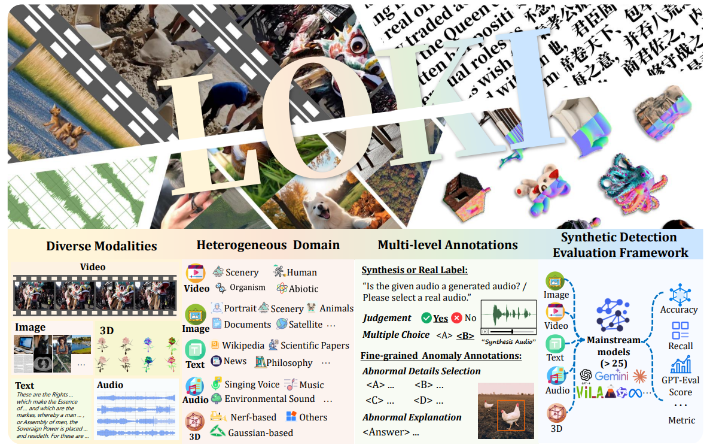
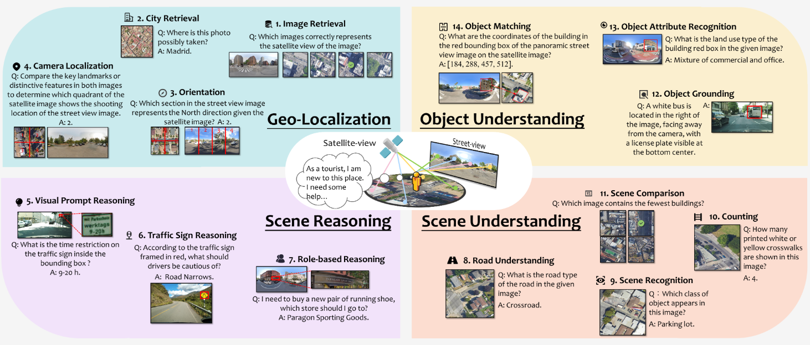
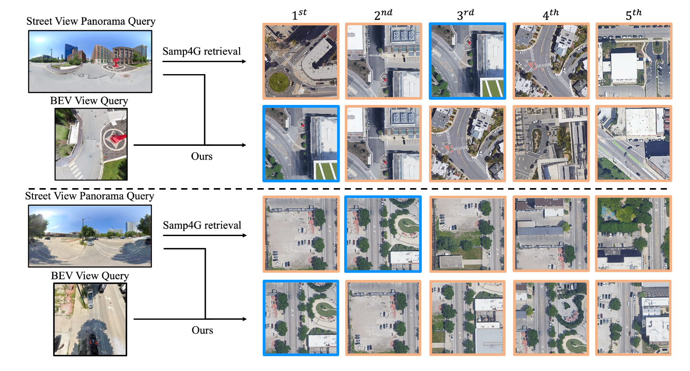
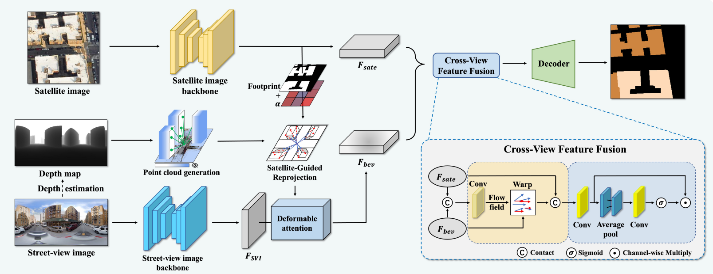
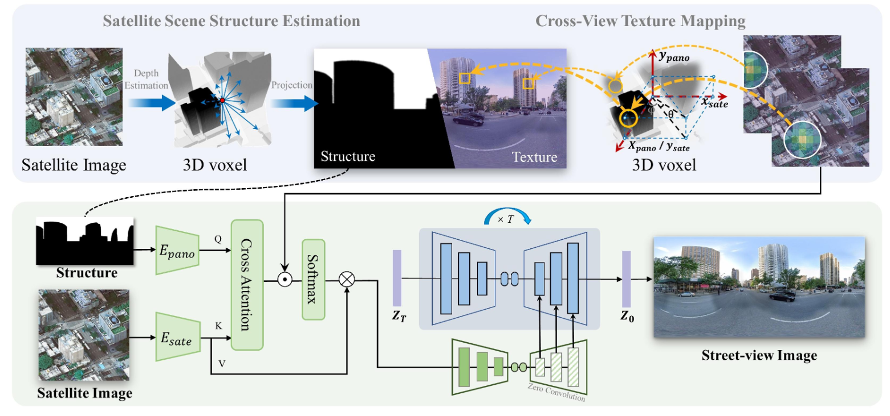
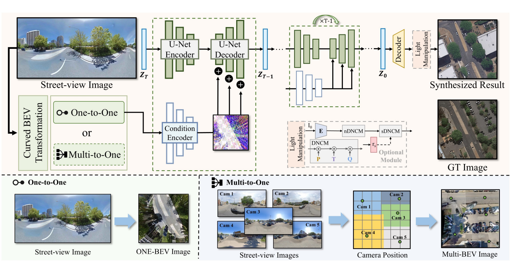
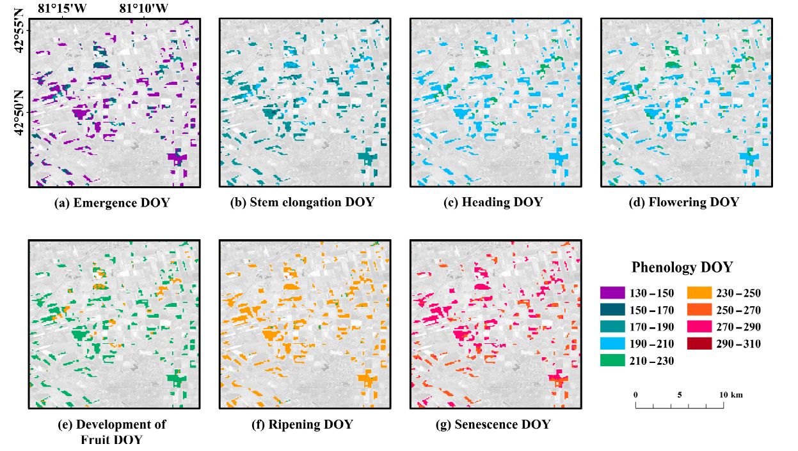

|
Junyan Ye (叶俊言)
Greetings! I'm currently a student at Sun Yat-sen University, advised by Prof.
Weijia Li.
I got a B.E. degree at Sun Yat-sen University in 2024.
Now I'm serving as a research intern at Shanghai AI Lab, and my mentor is Conghui He.
My ideal is to do influential scientific research!
My research interest includes:
- Remote Sensing & Cross-view tasks
- Synthetic Data Detection
- large vision-language models
Email /
Google Scholar /
Github /
Huggingface
|
📌News
[2025.2] 🔥 Happy to announce that Scene4U was accepted by CVPR 2025!
[2025.2] 🎉 Happy to announce that LOKI was accepted by ICLR 2025 Spotlight!
[2024.12]✨ Delighted to announce that Urbench were accepted by AAAI 2025!
[2024.7] 📜 We are very happy that our work EP-BEV on the cross-view retrieval task was accepted by ECCV 2024!
[2024.4] 🎉 Our work on cross-view segmentation SG-BEV was accepted by CVPR 2024 and selected as the Highlight poster!
📖Research
* indicates the equal contribution.
† indicates the corresponding authors .
|
|

|
LOKI: A Comprehensive Synthetic Data Detection Benchmark using Large Multimodal Models
Junyan Ye*, Baichuan Zhou*, Zilong Huang*, Junan Zhang*, Tianyi Bai*, Hengrui Kang, Jun He, Honglin Lin, Zihao Wang, Tong Wu, Zhizheng Wu, Yiping Chen, Dahua Lin, Conghui He†, Weijia Li†
ICLR 2025, Spotlight
[project page]
[paper]
[code]
|
|

|
Urbench: A Comprehensive Benchmark for Evaluating Large Multimodal Models in Multi-view Urban Scenarios
Baichuan Zhou*, Haote Yang*, Dairong Chen*, Junyan Ye*, Tianyi Bai, Jinhua Yu, Songyang Zhang, Dahua Lin, Conghui He†, Weijia Li†
AAAI 2025
[project page]
[paper]
[code]
|
|

|
Cross-View Image Geo-Localization with Panorama-BEV Co-Retrieval Network
Junyan Ye, Zhutao Lv, Weijia Li†, Jinhua Yu, Haote Yang, Huaping Zhong, Conghui He†
ECCV 2024
[paper]
[code]
|
|

|
SG-BEV: Satellite-Guided BEV Fusion for Cross-View Semantic Segmentation
Junyan Ye, Qiyan Luo, Jinhua Yu, Huaping Zhong, Zhimeng Zheng, Conghui He, Weijia Li†
CVPR 2024 Highlight
[paper]
[code]
|
|

|
CrossViewDiff: A Cross-View Diffusion Model for Satellite-to-Street View Synthesis
Weijia Li*, Jun He*, Junyan Ye*,Huaping Zhong*, Zhimeng Zheng, Zilong Huang, Dahua Lin, Conghui He†
[project page]
[paper]
[code]
|
|

|
SkyDiffusion: Street-to-Satellite Image Synthesis with Diffusion Models and BEV Paradigm
Junyan Ye,Jun He*, Weijia Li†, Zhutao Lv, Jinhua Yu, Haote Yang, Conghui He†
[project page]
[paper]
[code]
|
|

|
Corn Phenology Detection Using the Derivative Dynamic Time Warping Method and Sentinel-2 Time Series
Junyan Ye*, Wenhao Bao, Chunhua Liao†, Dairong Chen, Haoxuan Hu
[paper]
|
📝 Academic Service (Reviewer)
- ICCV 2025
- CVPR 2025
- TCSVT
|
Thanks the original template from jonbarron and the
modifications made by shi.
|
|